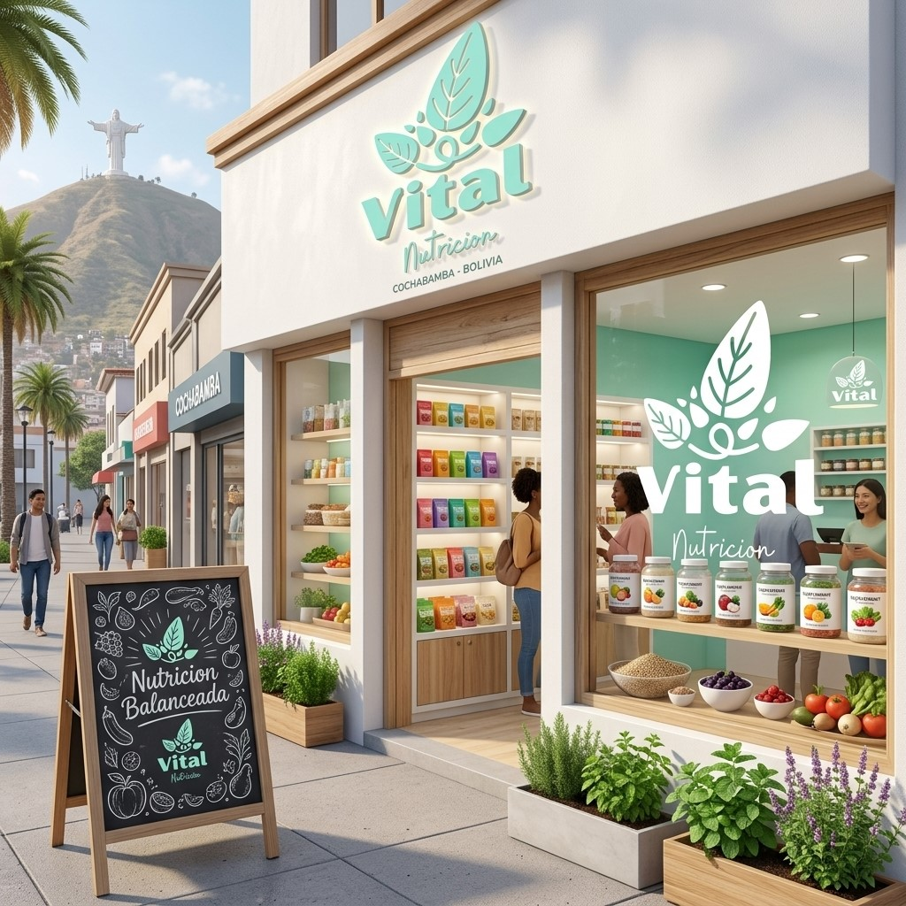

Bienvenidos
Vital Nutrición es mucho mas que un simple negocio, es un espacio donde ayudamos a mejorar la calidad de vida de las personas.
¿Cómo nació Vital Nutrición?
Nació con el propósito de romper el mito de que comer sano es aburrido, restrictivo o sumamente costoso. Por eso decidimos crear un espacio calido y profesional enfocado en guiar a nuestra comunidad hacia un bienestar real, utilizando alimentos locales, accesibles y de temporada.

Servicios
- Consultas nutricionales personalizadas
- Control de peso y bienestar.
- Asesoria de alimentación familiar.
Horarios
- L-V: 08:00 - 12:30 - 14:30 - 18:00
- Sábados: 09:00 - 13:00
Ubicación
Av. Circunvalación, Cercado